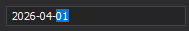
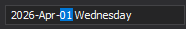
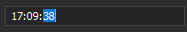

Mask Type: DateTime
The DateTime mask type allows users to enter date and/or time values in a structured format.
Mask patterns are culture-dependent. The same mask may produce different results depending on the system’s regional settings.
Standard Masks
Standard masks provide predefined date and time formats based on .NET format specifiers.
| Mask | Description | Sample |
|---|---|---|
d |
Short “mm/dd/yyyy” date format | 8/24/2020 |
D |
Long date format | Monday, August 24, 2020 |
t |
Short “hh:mm AM/PM” time format | 7:51 PM |
T |
Long “hh:mm:ss AM/PM” time format | 7:51:13 PM |
g |
Short date + short time | 8/24/2020 7:51 PM |
G |
Short date + long time | 8/24/2020 7:51:13 PM |
f |
Long date + short time | Monday, August 24, 2020 7:51 PM |
F |
Full time format according to the FullDateTimePattern property value. In the “en-US” culture, this specifier combines long date and long time masks | August 24, 2020 7:51:13 PM |
R or r |
Date-time in the RFC1123 format | Sun, 16 Aug 2020 16:08:00 GMT |
s |
ISO8601 sortable format | 2020-08-16T16:08:00 |
u |
Universal sortable format | 2020-08-16 16:08:00Z |
M |
Month name and day | August 24 |
Y |
Month name and year | August 2020 |
Standard masks cannot be combined within a single expression.
To create custom combinations, use custom mask specifiers.
Custom Masks
Custom masks allow you to build flexible date-time formats by combining specifiers.
For example:
mask.MaskExpression = "MMMM d, h:mm tt";
This produces:
August 24, 7:51 PM
Custom Specifiers
The following table lists commonly used custom specifiers.
| Specifier or placeholder | Description | Example |
|---|---|---|
d (%d, if used alone) |
Day of month | 1, 2, 3 … 31 |
dd |
Day with leading zero | 01, 02, 03 … 31 |
ddd |
Read-only abbreviated day of the week. Abbreviated day names are specified by the culture’s AbbreviatedDayNames property. |
Mon, Tue, Sat |
dddd |
Read-only full day of the week. Full day names are specified by the culture’s DayNames property. |
Monday, Tuesday, Saturday |
F or f (%F or %f, if used alone) |
One fraction of a second. You can repeat this specifier up to seven times. Masks that have 4 or more “f” (“F”) specifiers are read-only. | 1 to 9 (f or F) 01 to 99 (ff or FF) 0000001 to 9999999 (fffffff or FFFFFFF) |
s (%s, if used alone) |
Second | 1, 2, 3 … 59 |
ss |
Second, with a leading zero for single-digit values | 01, 02, 03 … 59 |
h |
Hour in 12-hour format | 1, 2, 3 … 12 |
hh |
Hour in 12-hour format, with a leading zero for single-digit values | 01, 02, 03 … 12 |
H |
Hour in 24-hour format | 0, 1, 2 … 23 |
HH |
Hour in 24-hour format, with a leading zero for single-digit values | 00, 01, 02 … 23 |
m |
Minute | 0, 1, 2 … 59 |
mm |
Minute, with a leading zero for single-digit values | 00, 01, 02 … 59 |
M |
Month number | 1, 2, 3 … 12 |
MM |
Month number, with a leading zero for single-digit values | 01, 02, 03 … 12 |
MMM |
Abbreviated month name according to the culture (the AbbreviatedMonthNames property) | Jan, Feb, Mar |
MMMM |
Full month name according to the culture (the MonthNames property) | January, February, March |
y (%y, if used alone) |
Last two digits of a year | 1 for 2001, 20 for 2020 |
yy |
Last two digits of a year with a leading zero for single-digit values | 01 for 2001, 20 for 2020 |
yyyy |
Four-digit year | 0001 - 9999 |
g |
Read-only era | AD or BC |
tt |
Time designator | AM or PM |
t (%t, if used alone) |
First letter of the time designator | A or P |
z |
Hours offset from UTC, with no leading zeros. Read-only. | -1, +5 |
zz |
Hours offset from UTC, with a leading zero for single-digit values. Read-only. | -01, +05 |
zzzz |
Hours and minutes offset from UTC. Read-only. | -01:00, +05:00 |
Special Characters
| Character | Description | |
|---|---|---|
: |
Time separator according to the culture (the TimeSeparator property). | |
/ |
Date separator according to the culture (the DateSeparator property). | |
\\ |
Tells the editor to treat the following symbol as a regular character, not a date-time specifier. For instance, the “zz” sequence defines a two-digit time zone mask, and the “\z\z” sequence displays static “zz” text. | |
' or " |
Allows you to add static (read-only) strings | ‘Current time:’ HH:mm |
Example 1
yyyy-MM-dd - a four-digit year at the first position, a month number at the second position, and a day number at the third position. The ‘-‘ character is the date separator.

Example 2
yyyy-MMM-dd dddd - the same mask, but month names are abbreviated. A read-only day name is also displayed.

Example 3
HH:mm:ss - the 24-hour time format.
